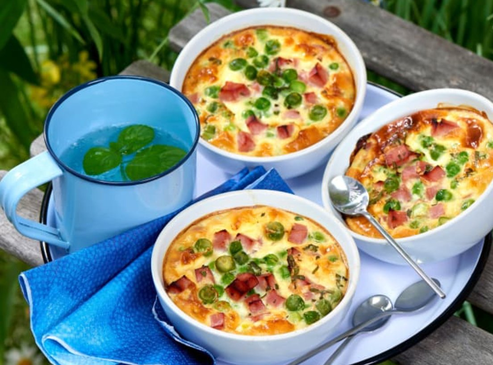

Clafoutis petits pois jambon
Ingredients
4×
- 600 g d'eau
- 0.5 c. à c. de gros sel
- 300 g de petits pois frais
- beurre
- 60 g de farine
- 3 oeufs
- 300 g de lait
- 3 pincées de sel
- 3 pincées de poivre
- 300 g de jambon fumé en dés

Préparation
Étape 1
Mettre 600 g d'eau, 0.5 c. à c. de gros sel et 300 g de petits pois frais dans le bol, puis cuire 20 min/100ºC/vitesse spatule.
Étape 2
Égoutter les petits pois dans le panier cuisson et les passer sous l’eau froide.
Étape 3
Préchauffer le four à 180ºC. Beurrer 4 ramequins avec du beurre.
Étape 4
Mettre 60 g de farine, 3 oeufs, 300 g de lait, 3 pincées de sel et 3 pincées de poivre dans le bol, puis mélanger 20 sec/vitesse 4.
Étape 5
Incorporer les petits pois et 300 g de jambon fumé en dés à la cuillère. Répartir dans les ramequins et cuire 40min à 180ºC.